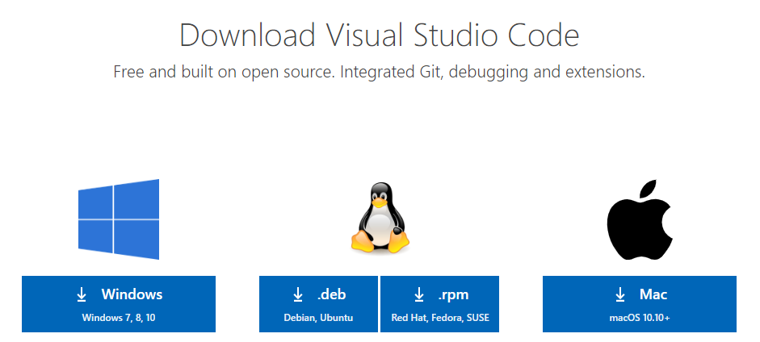

Install Visual Studio Code.

You can install a single version of NodeJS on your machine. However, for web development it is much easier to use a Node Version Manager that can load and switch between different versions.
Your future self will thank you for doing this.
Use either the Windows or Mac instructions based on your computer.
Download and install Node Version Manager for Windows. Verify your installation in a new terminal using the command below.
nmv list
Verify the version of Node that you are running.
node - v;
Use the instructions at https://github.com/nvm-sh/nvm
Each version of Angular will need to use compatible versions of the following tools/packages.
Use the following unofficial - yet very reliable guidance at: Angular CLI, Angular, Node.js and TypeScript compatibility.
To target Angular 10, we will need to use NodeJS version 12.11.x or later minor version. Use the nvm tool to install this version
nvm install 12.11
Here is the output of the installation. To complete our setup
nvm install 12.11
12.11.0
Downloading node.js version 12.11.0 (64-bit)...
Complete
Creating C:\Users\matt\AppData\Roaming\nvm\temp
Downloading npm version 6.11.3... Complete
Installing npm v6.11.3...
Installation complete. If you want to use this version, type
nvm use 12.11.0
To complete our setup, use the command:
nvm use 12.11.0
Install Yarn.
yarn - v;
When you want to target a specific version of Angular (not latest), you can view the versions of the Angular CLI at https://www.npmjs.com/package/@angular/cli.
Use the list to view the latest version of the target major and minor number. For example if we want to use Angular version 10, the latest version is
10.2.0. We can install this version using the command:npm i @angular/cli@10.2.0
npm i -g @angular/cli@10.2.0
Use the ng --version command in your terminal to verify the installation and to see the version information.
ng --version
_ _ ____ _ ___
/ \ _ __ __ _ _ _| | __ _ _ __ / ___| | |_ _|
/ △ \ | '_ \ / _` | | | | |/ _` | '__| | | | | | |
/ ___ \| | | | (_| | |_| | | (_| | | | |___| |___ | |
/_/ \_\_| |_|\__, |\__,_|_|\__,_|_| \____|_____|___|
|___/
Angular CLI: 10.2.0
Node: 12.15.0
OS: win32 x64
Angular:
...
Ivy Workspace:
Package Version
------------------------------------------------------
@angular-devkit/architect 0.1002.0 (cli-only)
@angular-devkit/core 10.2.0 (cli-only)
@angular-devkit/schematics 10.2.0 (cli-only)
@schematics/angular 10.2.0 (cli-only)
@schematics/update 0.1002.0 (cli-only)
Get information about Angular versions/releases. There is an Update Guide tht provides help to upgrade to newer versions of Angular. See: https://update.angular.io/
For example, if you want to upgrade from version 8 to version 9, you can use the guide for steps.
Install Git on your machine.
git version
git version 2.19.1.windows.1
Clone the repository.
git clone https://github.com/buildmotion/learn-angular-in-3-days
Use your terminal to change directory to workspace.
cd workspace
Use the code . command in your terminal to open the directory in Visual Studio Code.
code .